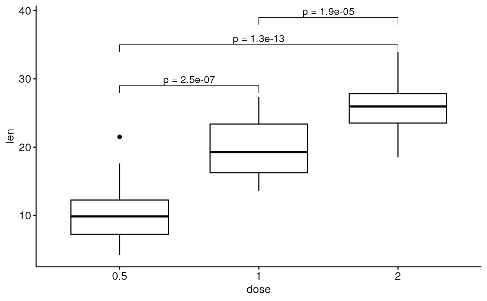

Add Manually P-values to a ggplot
stat_pvalue_manual.RdAdd manually p-values to a ggplot, such as box blots, dot plots and stripcharts.
stat_pvalue_manual( data, label = NULL, y.position = "y.position", xmin = "group1", xmax = "group2", x = NULL, size = 3.88, label.size = size, bracket.size = 0.3, color = "black", linetype = 1, tip.length = 0.03, remove.bracket = FALSE, step.increase = 0, step.group.by = NULL, hide.ns = FALSE, vjust = 0, position = "identity", ... )
Arguments
| data | a data frame containing statitistical test results. The expected
default format should contain the following columns: |
|---|---|
| label | the column containing the label (e.g.: label = "p" or label =
"p.adj"), where |
| y.position | column containing the coordinates (in data units) to be used for absolute positioning of the label. Default value is "y.position". Can be also a numeric vector. |
| xmin | column containing the position of the left sides of the brackets. Default value is "group1". |
| xmax | (optional) column containing the position of the right sides of the brackets. Default value is "group2". If NULL, the p-values are plotted as a simple text. |
| x | x position of the p-value. Should be used only when you want plot the p-value as text (without brackets). |
| size, label.size | size of label text. |
| bracket.size | Width of the lines of the bracket. |
| color | text and line color. Can be variable name in the data for coloring by groups. |
| linetype | linetype. Can be variable name in the data for changing linetype by groups. |
| tip.length | numeric vector with the fraction of total height that the bar goes down to indicate the precise column. Default is 0.03. |
| remove.bracket | logical, if |
| step.increase | numeric vector with the increase in fraction of total height for every additional comparison to minimize overlap. |
| step.group.by | a variable name for grouping brackets before adding step.increase. Useful to group bracket by facet panel. |
| hide.ns | logical value. If TRUE, hide ns symbol when displaying
significance levels. Filter is done by checking the column
|
| vjust | move the text up or down relative to the bracket. Can be also a column name available in the data. |
| position | position adjustment, either as a string, or the result of a call to a position adjustment function. |
| ... | other arguments passed to the function |
See also
Examples
#> # A tibble: 3 x 8 #> .y. group1 group2 p p.adj p.format p.signif method #> <chr> <chr> <chr> <dbl> <dbl> <chr> <chr> <chr> #> 1 len 0.5 1 1.27e- 7 2.50e- 7 1.3e-07 **** T-test #> 2 len 0.5 2 4.40e-14 1.30e-13 4.4e-14 **** T-test #> 3 len 1 2 1.91e- 5 1.90e- 5 1.9e-05 **** T-test# Perform a t-test between groups stat.test <- compare_means( len ~ dose, data = ToothGrowth, method = "t.test" ) stat.test#> # A tibble: 3 x 8 #> .y. group1 group2 p p.adj p.format p.signif method #> <chr> <chr> <chr> <dbl> <dbl> <chr> <chr> <chr> #> 1 len 0.5 1 1.27e- 7 2.50e- 7 1.3e-07 **** T-test #> 2 len 0.5 2 4.40e-14 1.30e-13 4.4e-14 **** T-test #> 3 len 1 2 1.91e- 5 1.90e- 5 1.9e-05 **** T-test# Add manually p-values from stat.test data # First specify the y.position of each comparison stat.test <- stat.test %>% mutate(y.position = c(29, 35, 39)) p + stat_pvalue_manual(stat.test, label = "p.adj")# Customize the label with glue expression # (https://github.com/tidyverse/glue) p + stat_pvalue_manual(stat.test, label = "p = {p.adj}")# Grouped bar plots #%%%%%%%%%%%%%%%%%%%%%%%%%%%%%%%%%%%%%%%%%%% ToothGrowth$dose <- as.factor(ToothGrowth$dose) # Comparisons against reference stat.test <- compare_means( len ~ dose, data = ToothGrowth, group.by = "supp", method = "t.test", ref.group = "0.5" ) stat.test#> # A tibble: 4 x 9 #> supp .y. group1 group2 p p.adj p.format p.signif method #> <fct> <chr> <chr> <chr> <dbl> <dbl> <chr> <chr> <chr> #> 1 VC len 0.5 1 0.000000681 0.000002 6.8e-07 **** T-test #> 2 VC len 0.5 2 0.0000000468 0.00000019 4.7e-08 **** T-test #> 3 OJ len 0.5 1 0.0000878 0.000088 8.8e-05 **** T-test #> 4 OJ len 0.5 2 0.00000132 0.0000026 1.3e-06 **** T-test# Plot bp <- ggbarplot(ToothGrowth, x = "supp", y = "len", fill = "dose", palette = "jco", add = "mean_sd", add.params = list(group = "dose"), position = position_dodge(0.8)) bp + stat_pvalue_manual( stat.test, x = "supp", y.position = 33, label = "p.signif", position = position_dodge(0.8) )